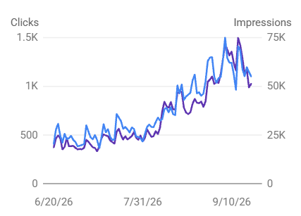

01 / Discover
Find the Reddit conversations that matter
Spot relevant questions, communities, and comparison threads before your brand joins the discussion.
Bring the visitors your website deserves and build your brand’s authority. Scale Xpert connects AI search readiness, SEO, and Reddit visibility in one ongoing service.
Be present when people ask for recommendations on Reddit. Scale Xpert connects useful conversations with SEO content, relevant authority, and a clear view of your visibility.
Spot relevant questions, communities, and comparison threads before your brand joins the discussion.
Join appropriate Reddit discussions with context and helpful answers that follow each community's rules.
Use audience questions to plan useful pages and articles people can discover through search.
Support your content with referring domains and editorial placements that make sense for readers.
Look beyond mention counts to see post views, votes, replies, and the response each conversation generates.
Present clear answers and supporting evidence on your site so search and AI systems can interpret what you offer.
Review delivered work alongside search visibility and Reddit signals, then agree on the next priorities.
Choose a plan, connect your website, and follow the work and visibility signals that matter to your business.
Pick the monthly scope that fits your goals across AI, SEO, and Reddit visibility.
Share your URL, target audience, and goals so we can focus the work on your site.
Review delivered work, search visibility, Reddit mentions, post views, and reactions over time.
Explore four Scale Xpert demo scenarios across different industries. The charts and figures below are illustrative sample data, not verified client outcomes.

Example focus: useful product guides, clearer pages, and relevant authority signals.
.webp)
Example focus: service pages, local intent, and a stronger network of relevant links.
.webp)
Example focus: topic clusters, helpful articles, and consistent page improvements.
.webp)
Example focus: answer-driven pages, technical cleanup, and trusted mentions.
Demo scenarios use illustrative figures and are not testimonials, guarantees, or results attributed to a real Scale Xpert client.
This chart is separate from the four demo stories above. Actual results depend on the website, market, and work completed.
Discuss your visibility goalsReal feedback from entrepreneurs, founders, and professionals who worked with us and experienced strong communication, professionalism, and measurable SEO growth. Feedback about Paul and the team from previous client work. These reviews describe that experience; they do not measure the autopilot software’s performance.
“Paul is a very serious and dedicated person. Having known him for a few years, I can attest to his strong commitment to his work. He is always attentive and highly invested in his company. I recommend him if you need advice.”
“Paul helped me carry out prospecting campaigns on LinkedIn. He also did some work restructuring my profile. I recommend Paul and his team for their seriousness, their friendliness and their commitment to the project.”
“I recommend Paul! Energetic, enterprising and determined, he is aware of the challenges of his business and does everything possible to achieve his goal: helping businesses, which he does very well. He is reliable and serious, which is a real asset.”
“Paul is a serious person who keeps his promises. He is also a good listener, honest, and offers excellent advice. I recommend him.”
“Paul is a trustworthy, responsible, and highly dedicated individual. Thanks to his thoroughness and the quality of his work, he consistently delivers excellent results. I highly recommend him.”
“Paul is a highly qualified, competent, and passionate individual. I recommend him.”
“Paul is a very good listener who knows how to adapt to all types of people and situations while remaining true to his down-to-earth nature. His versatility is a real asset.”
Compare the content, authority, and Reddit mention quantities in each plan. Final deliverables and terms are confirmed for your website.
A starting scope for SEO content and Reddit brand visibility.
More content, relevant authority work, and Reddit visibility.
A broader scope for SEO, Reddit visibility, and AI search readiness.
The quantities above come from the supplied draft package reference. Final scope, quality criteria, billing terms and availability are confirmed in a written proposal. Rankings and AI citations are not guaranteed.
Follow meaningful signals alongside the monthly work. Post reach and reactions vary by conversation and are reviewed as observed, not promised outcomes.
Track where your brand appears in relevant Reddit conversations.
Team-reported cumulative views on Scale Xpert posts. This figure is community reach, not client traffic.
Review votes and replies on each post to understand the response.
Join Scale Xpert, a curated community for high-quality backlink exchange.
Connect directly with verified SEO peers, website owners, and digital growth professionals. Skip cold outreach and build meaningful link partnerships through a trusted network.
A curated SEO community where website owners can find relevant partners, exchange guest posts, compare quality signals, and grow authority through trusted relationships.
Instead of emailing hundreds of websites, users meet site owners who are already open to collaboration.
Members compare niches, traffic, and authority before deciding whether a backlink opportunity makes sense.
The community supports backlink and guest post exchanges that help users earn contextual links.
Scale-Xpert encourages relationships, link-worthy content, outreach, and long-term collaboration.
Strong backlinks come from relevant, authoritative websites, appear naturally, and provide real reader value.
Enter the community and choose your interest.
Share your site, niche, and SEO metrics like DA, DR, or traffic.
Connect with website owners and agree on backlink placements directly.
Bonus: New members can receive their first 3 backlink opportunities.
Learning how to use AI for broken link building can help beginners find dead links, organize backlink opportunities, and write better outreach without fully automating the process. The goal is not to let AI build backlinks for you. Instead, use AI to speed...
If you want to grow your website’s visibility and authority, guest posting is one of the most effective SEO strategies to consider. In simple terms, guest posting means writing and publishing an article on another website or blog. In return, the author...
A bid strategy in Google Ads is the automated or manual rule that determines how much your campaign bids in each ad auction and under what conditions those bids are adjusted. Your bid strategy is one of the most consequential campaign settings you configure,...
AI Overviews on branded searches can introduce your business through someone else's content before a customer visits your website. Therefore, ranking first for your brand name is only one part of the visibility question: you also need to inspect...
SEO visibility and Reddit visibility, with a clear monthly scope.
Scale Xpert provides ongoing AI, SEO, and Reddit visibility services. Its monthly offering covers SEO articles, relevant referring domains, Reddit visibility, and backlink placements.
Helping people discover your brand in relevant Reddit conversations. Contributions should offer useful context and follow each subreddit’s rules. The plan cards show the proposed monthly brand mention quantities.
Access, Growth, and Authority have different content, link, and Reddit mention quantities. Authority also includes an AI search visibility review. Your proposal confirms the final deliverables, quality criteria, and terms.
No. Rankings, traffic, Reddit reach, and AI citations depend on factors beyond the delivered work. Review the agreed scope and actual visibility signals over time.
Choose a plan to enquire about, or send your website, target audience, and visibility goals through the contact page.